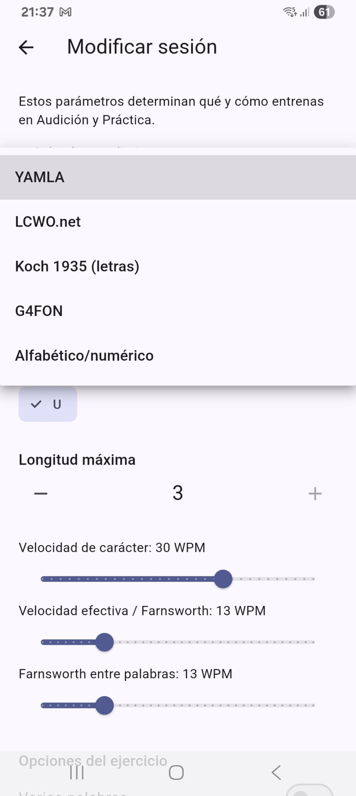
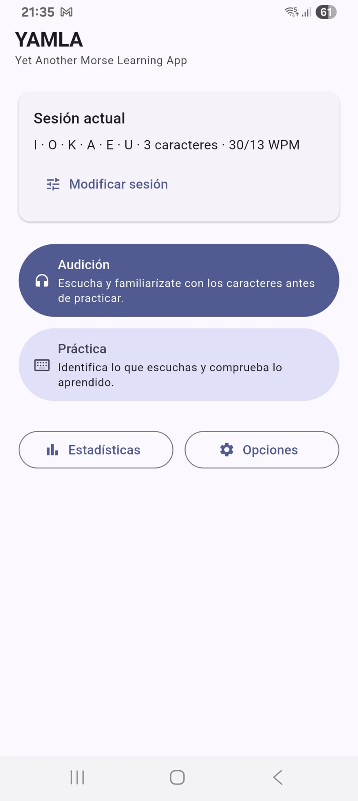
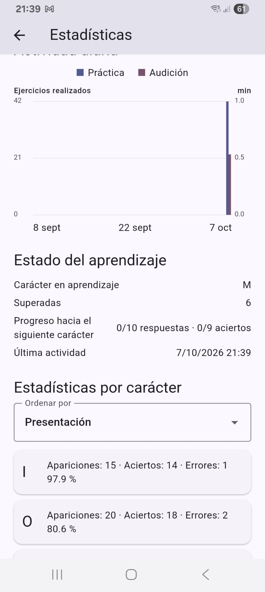
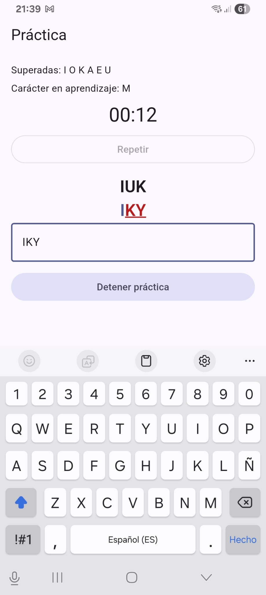
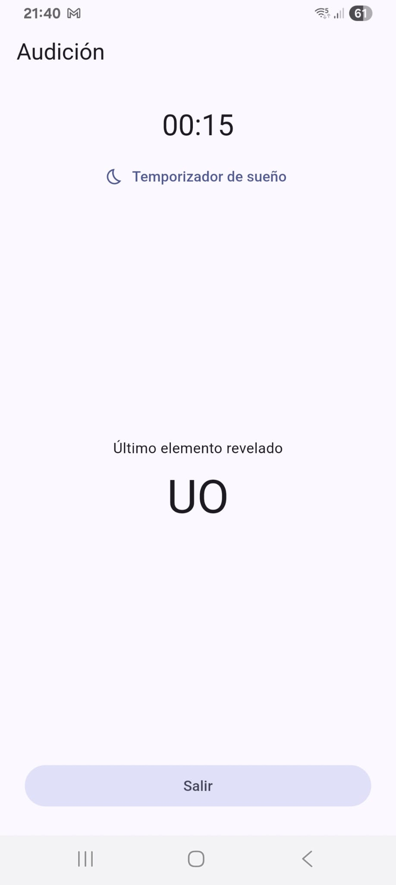
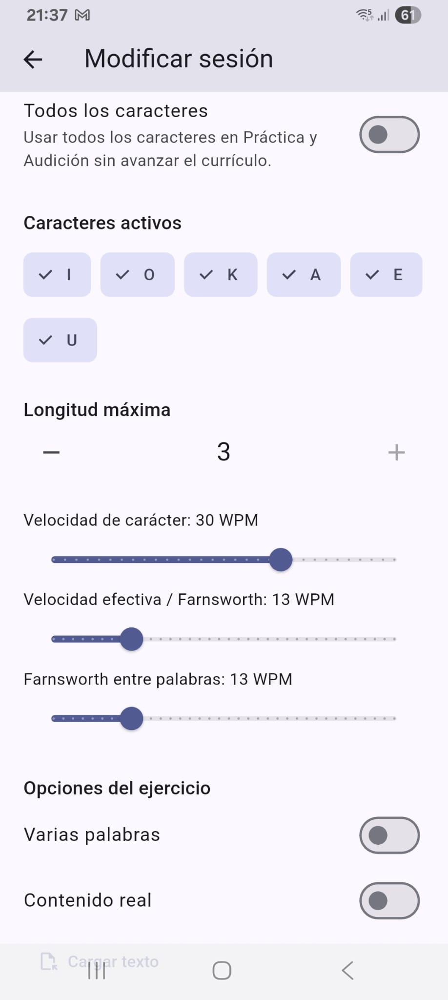

Five learning orders
Cinco órdenes de aprendizaje
Choose YAMLA, LCWO.net, Koch, G4FON or alphabetical / numeric progression.
Elige la progresión YAMLA, LCWO.net, Koch, G4FON o alfabética / numérica.
Yet Another Morse Learning App
YAMLA 1.0.0Learn Morse code reception by sound with progressive, adaptive practice — completely offline on Android.
Aprende recepción de código Morse por sonido con práctica progresiva y adaptativa — completamente offline en Android.

Choose YAMLA, LCWO.net, Koch, G4FON or alphabetical / numeric progression.
Elige la progresión YAMLA, LCWO.net, Koch, G4FON o alfabética / numérica.
YAMLA tracks knowledge per character and gives more practice to the characters that need it.
YAMLA estima el conocimiento de cada carácter y da más práctica a los que más la necesitan.
Answer interactively in Practice, or train your ear with continuous Listening and real text.
Responde en Práctica, o entrena el oído con Audición continua y texto real.
Adjust character speed and effective Farnsworth speed independently, and use the full character set whenever you want.
Ajusta por separado la velocidad de carácter y la velocidad efectiva Farnsworth, y usa todos los caracteres cuando quieras.

Switch between five learning orders without throwing away what you have already learned. Character statistics are retained across curricula.
Cambia entre cinco órdenes de aprendizaje sin perder lo que ya has aprendido. Las estadísticas de cada carácter se conservan entre currículos.

Performance is tracked independently for each character. Weaker characters receive more attention while consolidated ones continue to be reviewed.
El rendimiento se sigue de forma independiente para cada carácter. Los más débiles reciben más atención mientras los consolidados siguen repasándose.

Listen to Morse, type what you heard and get immediate character-by-character feedback. Sequence length grows progressively as reception improves.
Escucha Morse, escribe lo que has oído y recibe corrección inmediata carácter a carácter. La longitud de las secuencias crece progresivamente al mejorar la recepción.

Use Listening simply to train your ear, including real text. Background audio lets practice continue with the screen off on supported Android configurations.
Usa Audición simplemente para entrenar el oído, también con texto real. El audio en segundo plano permite continuar con la pantalla apagada en configuraciones Android compatibles.

No account, telemetry, analytics, advertising, cloud services or automatic update checks. Learning data and settings stay on your device.
Sin cuenta, telemetría, analítica, publicidad, servicios en la nube ni comprobaciones automáticas de actualizaciones. Tus datos y ajustes permanecen en el dispositivo.
Official APKs for arm64-v8a, armeabi-v7a and x86_64 are published with SHA-256 checksums. For most modern phones, arm64-v8a is the right choice.
Se publican APK oficiales para arm64-v8a, armeabi-v7a y x86_64 junto con sus SHA-256. Para la mayoría de móviles actuales, arm64-v8a es la opción adecuada.
This public repository is used for the presentation and distribution of YAMLA. It does not contain the application's source code.
Este repositorio público se utiliza para la presentación y distribución de YAMLA. No contiene el código fuente de la aplicación.